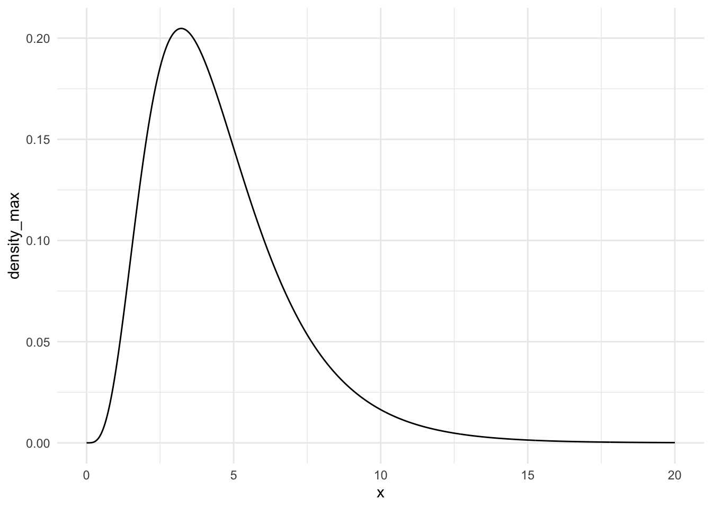

n <-5mu <-10sigma <-2# sample size# population mean# population standard deviationgenerate_samp_min <-function(mu, sigma, n) { single_sample <-rnorm(n, mu, sigma) sample_min <-min(single_sample)return(sample_min)}## test function once:generate_samp_min(mu = mu, sigma = sigma, n = n)
[1] 8.421951
nsim <-5000# number of simulations## code to map through the function.## the \(i) syntax says to just repeat the generate_samp_mean function## nsim timesmins <-map_dbl(1:nsim, \(i) generate_samp_min(mu = mu, sigma = sigma, n = n))## print some of the 5000 means## each number represents the sample mean from __one__ sample. means_df <- tibble(means)norm_mins_df <-tibble(mins)norm_mins_df
ggplot(data = norm_mins_df, aes(x = mins)) +geom_histogram(colour ="deeppink4", fill ="deeppink1", bins =20) +theme_minimal() +labs(x ="Observed Sample Mins",title =paste("Sampling Distribution of the \nSample Min when n =", n))
n <-5mu <-10sigma <-2# sample size# population mean# population standard deviationgenerate_samp_max <-function(mu, sigma, n) { single_sample <-rnorm(n, mu, sigma) sample_max <-max(single_sample)return(sample_max)}## test function once:generate_samp_max(mu = mu, sigma = sigma, n = n)
[1] 12.93797
nsim <-5000# number of simulations## code to map through the function.## the \(i) syntax says to just repeat the generate_samp_mean function## nsim timesmaxs <-map_dbl(1:nsim, \(i) generate_samp_max(mu = mu, sigma = sigma, n = n))## print some of the 5000 means## each number represents the sample mean from __one__ sample. means_df <- tibble(means)maxs_df <-tibble(maxs)ggplot(data = maxs_df, aes(x = maxs)) +geom_histogram(colour ="deeppink4", fill ="deeppink1", bins =20) +theme_minimal() +labs(x ="Observed Sample Mins",title =paste("Sampling Distribution of the \nSample Max when n =", n))
n <-5theta1 <-7theta2 <-13# sample size# population mean# population standard deviationgenerate_unif_samp_min <-function(n, theta1, theta2) { single_sample <-runif(n, theta1, theta2) sample_min <-min(single_sample)return(sample_min)}## test function once:generate_unif_samp_min(n = n, theta1 = theta1, theta2 = theta2)
[1] 8.077204
nsim <-5000# number of simulations## code to map through the function.## the \(i) syntax says to just repeat the generate_samp_mean function## nsim timesmins <-map_dbl(1:nsim, \(i) generate_unif_samp_min(n = n, theta1 = theta1, theta2 = theta2))## print some of the 5000 means## each number represents the sample mean from __one__ sample. means_df <- tibble(means)unif_mins_df <-tibble(mins)unif_mins_df
ggplot(data = unif_mins_df, aes(x = mins)) +geom_histogram(colour ="deeppink4", fill ="deeppink1", bins =20) +theme_minimal() +labs(x ="Observed Sample Mins",title =paste("Sampling Distribution of the \nSample Min when n =", n))
n <-5theta1 <-7theta2 <-13# sample size# population mean# population standard deviationgenerate_unif_samp_max <-function(n, theta1, theta2) { single_sample <-runif(n, theta1, theta2) sample_max <-max(single_sample)return(sample_max)}## test function once:generate_unif_samp_max(n = n, theta1 = theta1, theta2 = theta2)
[1] 12.64314
nsim <-5000# number of simulations## code to map through the function.## the \(i) syntax says to just repeat the generate_samp_mean function## nsim timesmaxs <-map_dbl(1:nsim, \(i) generate_unif_samp_max(n = n, theta1 = theta1, theta2 = theta2))## print some of the 5000 means## each number represents the sample mean from __one__ sample. means_df <- tibble(means)unif_max_df <-tibble(maxs)unif_max_df
ggplot(data = unif_max_df, aes(x = maxs)) +geom_histogram(colour ="deeppink4", fill ="deeppink1", bins =20) +theme_minimal() +labs(x ="Observed Sample Maxs",title =paste("Sampling Distribution of the \nSample Max when n =", n))
n <-5# sample sizelambda <-0.5mu <-1/ lambda # population meansigma <-sqrt(1/ lambda ^2) # population standard deviationgenerate_exp_min <-function(lambda, n) { single_sample <-rexp(n, lambda) sample_min <-min(single_sample)return(sample_min)}nsim <-5000# number of simulationsmins <-map_dbl(1:nsim, \(i) generate_exp_min(lambda = lambda, n = n))## print some of the 5000 means## each number represents the sample mean from __one__ sample. means_df <- tibble(means)exp_mins_df <-tibble(mins)ggplot(data = exp_mins_df, aes(x = mins)) +geom_histogram(colour ="deeppink4", fill ="deeppink1", bins =20) +theme_minimal() +labs(x ="Observed Sample Mins",title =paste("Sampling Distribution of the \nSample Min when n =", n))
n <-5# sample sizelambda <-0.5mu <-1/ lambda # population meansigma <-sqrt(1/ lambda ^2) # population standard deviationgenerate_exp_max <-function(lambda, n) { single_sample <-rexp(n, lambda) sample_max <-max(single_sample)return(sample_max)}nsim <-5000# number of simulationsmaxs <-map_dbl(1:nsim, \(i) generate_exp_max(lambda = lambda, n = n))## print some of the 5000 means## each number represents the sample mean from __one__ sample. means_df <- tibble(means)exp_max_df <-tibble(maxs)ggplot(data = exp_max_df, aes(x = maxs)) +geom_histogram(colour ="deeppink4", fill ="deeppink1", bins =20) +theme_minimal() +labs(x ="Observed Sample Maxs",title =paste("Sampling Distribution of the \nSample Max when n =", n))
n <-5# sample sizealpha <-8beta <-2mu <- alpha / (alpha + beta) # population meansigma <-sqrt((alpha * beta) / ((alpha + beta)^2* (alpha + beta +1))) # population standard deviationgenerate_beta_min <-function(n, alpha, beta) { single_sample <-rbeta(n, alpha, beta) sample_min <-min(single_sample)return(sample_min)}nsim <-5000# number of simulationsmins <-map_dbl(1:nsim, \(i) generate_beta_min(n = n, alpha = alpha, beta = beta))## print some of the 5000 means## each number represents the sample mean from __one__ sample. means_df <- tibble(means)beta_mins_df <-tibble(mins)ggplot(data = beta_mins_df, aes(x = mins)) +geom_histogram(colour ="deeppink4", fill ="deeppink1", bins =20) +theme_minimal() +labs(x ="Observed Sample Mins",title =paste("Sampling Distribution of the \nSample Min when n =", n))
n <-5# sample sizealpha <-8beta <-2mu <- alpha / (alpha + beta) # population meansigma <-sqrt((alpha * beta) / ((alpha + beta)^2* (alpha + beta +1))) # population standard deviationgenerate_beta_max <-function(n, alpha, beta) { single_sample <-rbeta(n, alpha, beta) sample_max <-max(single_sample)return(sample_max)}nsim <-5000# number of simulationsmaxs <-map_dbl(1:nsim, \(i) generate_beta_max(n = n, alpha = alpha, beta = beta))## print some of the 5000 means## each number represents the sample mean from __one__ sample. means_df <- tibble(means)beta_maxs_df <-tibble(maxs)ggplot(data = beta_maxs_df, aes(x = maxs)) +geom_histogram(colour ="deeppink4", fill ="deeppink1", bins =20) +theme_minimal() +labs(x ="Observed Sample Mins",title =paste("Sampling Distribution of the \nSample Maxs when n =", n))
For the normal distribution with mu = 10 and sigma = 2, the distribution of the sample minimum and maximum when n = 5 have roughly the same Standard Error which makes sense becuase they both come from a normally distributed population.
For the Uniform distribution with theta one = 7 and theta 2 = 13, the distribution of the sample minimum and maximum when n = 5 have roughly the same Standard Error also. This is also apparent when you look at the distributions respective graphs, they have the same skewed shape but are basically mirrored versions of each other.
For the exponential distribution with lambda = 0.5, the distributions of the sample minimum and maximum when n = 5 have different Standard Errors. The Standard Error for the Sample Minimum distribution is much smaller than the Standard Error for the Sample Maximum distribution. This can be seen visually when comparing the histograms of the sample minimum and maximum distributions as the sample maximum looks like a more stretched out version of the sample minimum distribution.
I also think this is intuitive when looking at the graph of the population distribution. There’s more density towards the lower values, so more of the minimums will be sampled close to and it will create a right-skewed distribution with a lot of density close to 0. The density of the maximum will be more spread out considering the shape of the population graph, which we also can see in the histogram od the sample maximum distribution. I expect this to hold for a similar population to the one we tested with.
For the beta distribution with alpha = 8 and beta = 2, the distributions of the sample minimum and maximum when n = 5 have different Standard Errors. This time it’s the other way around and the Standard Error for the Sample Minimum is bigger than the Standard Error for the Sample Maximum Distribution.
When comparing the population graphs between the Beta and Exponential population I belive you can see why this is the result. The Beta graph has low density close to 0 and then it accelrates around 0.5 up to almost 1. This for me means that the sample minimum might be spread out while the sample maximum might be more concentrated which we also can see in their repsective graphs. I also expect this to hold for a similar population to the one we tested with.
Question 2
Exp min
n <-5## CHANGE 0 and 3 to represent where you want your graph to start and end## on the x-axisx <-seq(0, 5, length.out =1000)## CHANGE to be the pdf you calculated. Note that, as of now, ## this is not a proper density (it does not integrate to 1).density_min <-2.5*exp(-2.5* x)## put into tibble and plotsamp_min_df <-tibble(x, density_min)ggplot(data = samp_min_df, aes(x = x, y = density_min)) +geom_line() +theme_minimal()
Exp Max
n <-5## CHANGE 0 and 3 to represent where you want your graph to start and end## on the x-axisx <-seq(0, 20, length.out =1000)## CHANGE to be the pdf you calculated. Note that, as of now, ## this is not a proper density (it does not integrate to 1).density_max <-2.5* ((1-exp(-0.5* x))^4*exp(-0.5* x))## put into tibble and plotsamp_max_df <-tibble(x, density_max)ggplot(data = samp_max_df, aes(x = x, y = density_max)) +geom_line() +theme_minimal()

Find Expectation by integrating both dnesity fucntions
# Integrate the pdf of the sample maximum distribution * x from 0 to infinity ev_max <-integrate(function(x) {x * (2.5* ((1-exp(-0.5* x))^4*exp(-0.5* x)))} , lower =0, upper =Inf)ev_max
4.566667 with absolute error < 3.9e-05
# Integrate the pdf of the sample minimum distribution * x from 0 to infinity ev_min <-integrate(function(x) {x * (2.5*exp(-2.5* x))} ,lower =0, upper =Inf)ev_min
0.4 with absolute error < 5.3e-05
# Integrate the pdf of the sample maximum distribution * x^2 from 0 to infinity ev_squared_max <-integrate(function(x) {x^2* (2.5* ((1-exp(-0.5* x))^4*exp(-0.5* x)))} ,lower =0, upper =Inf)ev_squared_max
26.70889 with absolute error < 0.00093
# Integrate the pdf of the sample minimum distribution * x^2 from 0 to infinity ev_squared_min <-integrate(function(x) {x^2* (2.5*exp(-2.5* x))} ,lower =0, upper =Inf)ev_squared_min
0.32 with absolute error < 5.3e-07
# Use the results to calculate variance, take square root to get SEse_max <-sqrt(26.70889-4.566667^2)se_max
[1] 2.419596
# Use the results to calculate variance, take square root to get SEse_min <-sqrt(0.32-0.4^2)se_min
[1] 0.4
Table of Results
\(\text{Exp}(\lambda = 0.5)\)
\(\text{E}(Y_{min})\)
0.4
\(\text{E}(Y_{max})\)
4.567
\(\text{SE}(Y_{min})\)
0.4
\(\text{SE}(Y_{max})\)
2.419
I think my results are fairly close to the simulated answers. The expectation of the sample minimum distribution was off by 0.11, the expectation of the sample maximum distribution was off by 0.013. The Standard Error of the minimum distribution was off by 0.015 and the standard error of the maximum distribution was the same except for some rounding. I think this is a cool result and goes to show that simulation is a useful tool to find sampling distributions of many different statistics from different populations.